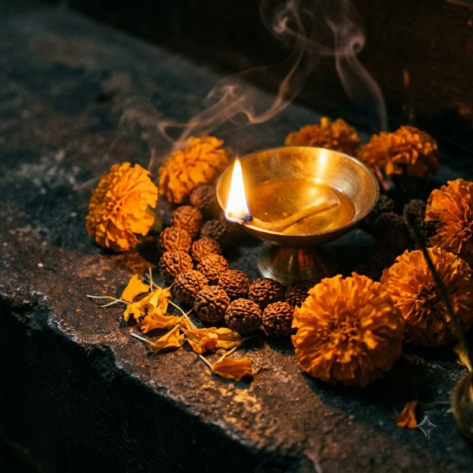

Vashikaran Specialist in Mayong
Attract positivity and bring loved ones back on the right path with safe Mayong Vashikaran techniques.
Genuine Vashikaran Services in Mayong
Mayong is globally famous as the capital of ancient magic and tantra. For centuries, the deep secrets of vashikaran (mind control through positive energies) have been practiced here. Deepak Tantrik is a highly respected Vashikaran Specialist in Mayong, utilizing these ancient methods strictly for the welfare of people.
Vashikaran is often misunderstood. In the right hands, it is a powerful tool to save breaking marriages, stop a partner from straying, or convince strict parents for love marriage. The rituals performed by Deepak Tantrik invoke pure energies that align the mind of your desired person favorably towards you, without causing any harm.
If you feel you are losing control over your relationships or life situations, consult the most trusted expert in Mayong. The results are swift, natural, and permanent. Reclaim the happiness you deserve.

Vashikaran in Mayong � The Original Science
In the spiritual vocabulary of tantrik in assam, vashikaran is not a dark art�it is a precise science of cosmic alignment. The Mayong texts describe vashikaran as channeling the natural magnetic frequency of an individual toward the person seeking the remedy. As the best mayong tantrik for vashikaran, Deepak Tantrik has spent decades studying these frequencies. His techniques, refined at the Kamakhya Temple and in the fields of Mayong, are entirely safe and leave no karmic debt on the practitioner or client.
The mayong tantrik contact for vashikaran services is the same as the general contact number: +91 9706801250. When you reach out, Deepak Tantrik will assess your situation via a detailed consultation before recommending the appropriate vashikaran ritual. He serves as both a mayong assam tantrik and a kamakhya temple tantrik, giving you access to the most powerful vashikaran remedies from two sacred locations simultaneously.
Who Can Benefit from Kamakhya Vashikaran?
Anyone facing: a partner who has grown cold and distant; family members refusing a love marriage; business rivals blocking your success; or children falling into bad company. As the most sought-after assam tantrik for vashikaran, Deepak Tantrik has resolved cases that other practitioners declared impossible. His dual authority as a tantrik in guwahati and a mayong tantrik makes him uniquely powerful. Don't hesitate�call the mayong tantrik contact number today.
Success Stories
The Most Authentic Tantrik in Kamakhya & Mayong
Whether you are searching for the best tantrik in kamakhya or the ultimate best mayong tantrik, Deepak Tantrik bridges the ancient powers of both sacred lands. Born in the mystical lands of Mayong�often depicted in the mayong assam black magic video documentaries as the heart of Indian magic�he inherited centuries-old secrets. He later established his deep spiritual practice at the Kamakhya Temple, making him the most sought-after tantrik in kamakhya temple. People from all over the world seek his mayong tantrik contact number for guaranteed results.
He specializes in kamakhya temple black magic removal and positive vashikaran. For those looking to learn about kamakhya temple and its genuine healers, Deepak Tantrik stands as the pillar of authenticity. As the leading tantrik in guwahati, his dual-presence as a mayong assam tantrik ensures that you receive the most potent remedies. Connect with the best tantrik in guwahati today and transform your life. Here, every assam tantrik ritual is performed with pure intent.